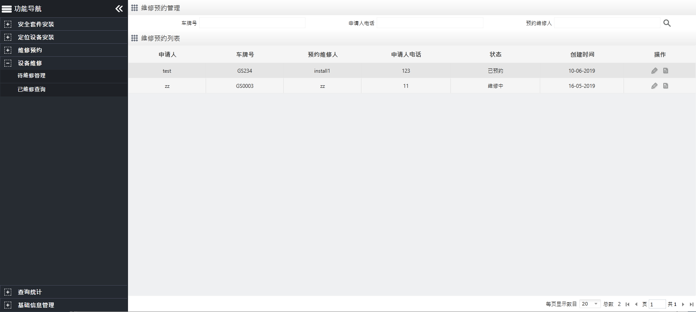

待维修管理
单击导航菜单栏中的
设备维修
→待维修管理
，进入
“维修预约管理”
页面，如下图所示。

Fig 110 待维修管理
•
单击
〖
〗
按钮，弹出修改对话框，编辑信息，单击
〖保存〗
完成编辑。
•
单击
〖
〗
按钮，查看预约详情信息。
Note:
•
设备维修
→待维修管理
的
“维修预约列表”
中的维修预约来自
维修预约
→申请管理
中的维修申请，只能编辑，不能删除。
•
已预约状态的维修预约先要编辑2次信息，第一次修改
“开始时间”
，将状态修改为维修中，第二次修改
“结束时间”
将状态修改为已维修，会在
设备维修
→已维修管理
的
“维修列表”
中看到刚添加已维修记录。
Parent topic: 设备维修